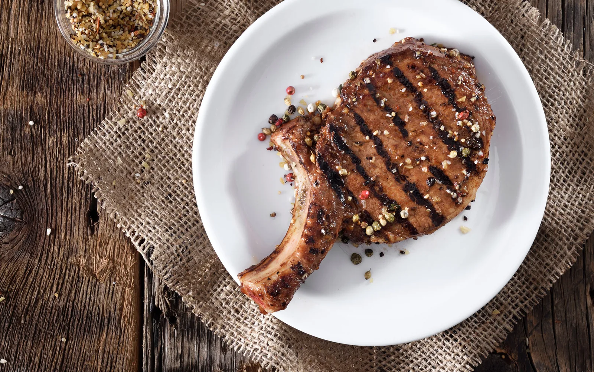
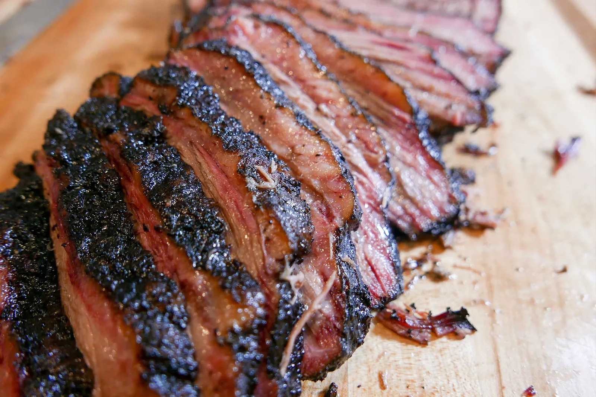

Photo placeholder: weekly item 1
Item of the week
Short line about what it is and why it’s worth a trip. One photo, one or two lines, same format every week.
Retail & deli · Woodville
Fresh cuts, smoked sausage, and a deli counter, from a shop where somebody knows your name and what you usually get.

This week
Beef comes out of the aging cooler on its own schedule, sausage runs when it runs, and the deli changes with what’s fresh. This is where we post it.
Short line about what it is and why it’s worth a trip. One photo, one or two lines, same format every week.
What finished aging this week, and roughly how long it’ll last before it’s gone.
Specialty or seasonal items in small quantities. When they’re out, they’re out.
Build note: the guide calls for a weekly “what’s in the case” post in a fixed format. Right now this section is hand-edited HTML. If the shop is already posting this to Facebook, it could pull from there automatically instead, see docs/open-questions.md.
Award winners
Award-winning. The one people buy by the tray before a weekend.
Award-winning. Smoked here, the way it’s supposed to be done.
Award-winning. A hot dog that tastes like it came from a butcher, because it did.
Award-winning, both cuts. Smoked in-house.
The full range
Between the two locations, the case runs deeper than most people expect.
Build note: the current site lists hundreds of individual SKUs across these categories. How much of that catalog the new site carries, full list, category pages, or a short highlights page like this one, is not yet decided. See docs/open-questions.md.
Woodville
124 River St. is where the grab-n-go lives. Meats and cheese by the pound, sandwiches built to order, salads, soups, hot plates, and pizza.
It’s the stop on the way home when dinner isn’t figured out yet.
